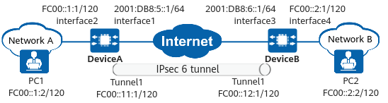

Example for Establishing an IPsec 6 Tunnel Between Two Gateways Using Tunnel Interfaces
Networking Requirements
As shown in Figure 1, DeviceA and DeviceB are egress gateways of two IPv6 networks. To ensure communication security, an IPsec tunnel needs to be established between the two IPv6 networks. To ensure tunnel stability, tunnel interfaces are used to establish an IPsec tunnel.

In this example, interface 1 and interface 2 represent 10GE 0/0/1 and 10GE 0/0/2 on DeviceA, and interface 3 and interface 4 represent 10GE 0/0/1 and 10GE 0/0/2 on DeviceB.

Item |
DeviceA |
DeviceB |
|---|---|---|
Interface configuration |
Interface: 10GE 0/0/1 IP address: 2001:DB8:5::1/64 |
Interface: 10GE 0/0/1 IP address: 2001:DB8:6::1/64 |
Interface: 10GE 0/0/2 IP address: FC00::1:1/120 |
Interface: 10GE 0/0/2 IP address: FC00::2:1/120 |
|
Interface: Tunnel 1 IP address: FC00::11:1/120 |
Interface: Tunnel 1 IP address: FC00::12:1/120 |
|
IPsec configuration |
Scenario: point-to-point Peer IP address: FC00::12:1 Authentication type: pre-shared key Local ID type: IP address Remote ID type: IP address |
Scenario: point-to-point Peer IP address: FC00::11:1 Authentication type: pre-shared key Local ID type: IP address Remote ID type: IP address |
Configuration Roadmap
This example uses default security algorithms of IPsec.
For security purposes, you are advised not to use the weak security algorithm or weak security protocol of this feature. If you must use such a weak security algorithm or protocol, run the install feature-software WEAKEA command to install the weak security algorithm or protocol feature package WEAKEA.
The roadmap for configuring DeviceA is the same as that for configuring DeviceB.
- Complete basic interface configurations.
- Configure routes, including public network routes for communication between DeviceA and DeviceB and private network routes to each other's network.
- Configure IPsec policies, including basic information of IPsec policies, data flows to be encrypted, and proposals.
Procedure
- Configure interfaces on DeviceA.
# Configure the public network interface 10GE 0/0/1.
<HUAWEI> system-view [HUAWEI] sysname DeviceA [DeviceA] interface 10ge 0/0/1 [DeviceA-10GE0/0/1] undo portswitch [DeviceA-10GE0/0/1] ipv6 enable [DeviceA-10GE0/0/1] ipv6 address 2001:DB8:5::1 64 [DeviceA-10GE0/0/1] quit
# Configure the private network interface 10GE 0/0/2.
[DeviceA] interface 10ge 0/0/2 [DeviceA-10GE0/0/2] undo portswitch [DeviceA-10GE0/0/2] ipv6 enable [DeviceA-10GE0/0/2] ipv6 address FC00::1:1 120 [DeviceA-10GE0/0/2] quit
# Configure an IPsec tunnel interface.
[DeviceA] interface tunnel 1 [DeviceA-Tunnel1] tunnel-protocol ipsec [DeviceA-Tunnel1] ipv6 enable [DeviceA-Tunnel1] ipv6 address fc00::11:1 120 [DeviceA-Tunnel1] quit
- Configure static routes on DeviceA to divert tunnel negotiation packets and encrypted data packets transmitted through the IPsec tunnel.
Assume that the next-hop IP address of the route from DeviceA to the Internet is 2001:DB8:5::2.
# Configure a static route to DeviceB to divert tunnel negotiation packets.
[DeviceA] ipv6 route-static 2001:DB8:6::0 64 2001:DB8:5::2
# Configure a static route to network B to divert encrypted data packets transmitted through the tunnel.
[DeviceA] ipv6 route-static FC00::2:0 120 tunnel 1 [DeviceA] ipv6 route-static FC00::12:0 120 2001:DB8:5::2
- Configure an IPsec policy on DeviceA and apply it to an interface.
- Configure interfaces on DeviceB.
# Configure the public network interface 10GE 0/0/1.
<HUAWEI> system-view [HUAWEI] sysname DeviceB [DeviceB] interface 10ge 0/0/1 [DeviceB-10GE0/0/1] undo portswitch [DeviceB-10GE0/0/1] ipv6 enable [DeviceB-10GE0/0/1] ipv6 address 2001:DB8:6::1 64 [DeviceB-10GE0/0/1] quit
# Configure the private network interface 10GE 0/0/2.
[DeviceB] interface 10ge 0/0/2 [DeviceB-10GE0/0/2] undo portswitch [DeviceB-10GE0/0/2] ipv6 enable [DeviceB-10GE0/0/2] ipv6 address FC00::2:1 120 [DeviceB-10GE0/0/2] quit
# Configure an IPsec tunnel interface.
[DeviceB] interface tunnel 1 [DeviceB-Tunnel1] tunnel-protocol ipsec [DeviceB-Tunnel1] ipv6 enable [DeviceB-Tunnel1] ipv6 address FC00::12:1 120 [DeviceB-Tunnel1] quit
- Configure static routes on DeviceB to divert tunnel negotiation packets and encrypted data packets transmitted through the IPsec tunnel.
Assume that the next-hop IP address of the route from DeviceB to the Internet is 2001:DB8:6::2.
# Configure a static route to DeviceA to divert tunnel negotiation packets.
[DeviceB] ipv6 route-static 2001:DB8:5::0 64 2001:DB8:6::2
# Configure a static route to network A to divert encrypted data packets transmitted through the tunnel.
[DeviceB] ipv6 route-static FC00::1:0 120 tunnel 1 [DeviceB] ipv6 route-static FC00::11:0 120 2001:DB8:6::2
- Configure an IPsec policy and apply it to an interface.
Verifying the Configuration
After the configuration is complete, run the ping command on a device in the protected network segment of network A or network B to trigger IKE negotiation.
If IKE negotiation succeeds, devices in the protected network segments at both ends of the tunnel can ping each other successfully. Otherwise, IKE negotiation fails.
On DeviceA and DeviceB, run the display ike sa and display ipsec sa brief commands to check SA establishment information. The following example uses the command output on DeviceB, which shows that IKE SAs and IPsec SAs have been established successfully.
<DeviceB> display ike sa Total number of IKE SA in all CPU : 2 Total number of phase 1 SA in all CPU : 1 Total number of phase 2 SA in all CPU : 1 Flag Description: RD--READY ST--STAYALIVE RL--REPLACED FD--FADING TO--TIMEOUT HRT--HEARTBEAT LKG--LAST KNOWN GOOD SEQ NO. BCK--BACKED UP M--ACTIVE S--STANDBY A--ALONE NEG--NEGOTIATING Slot 0, cpu 0 IKE SA information : Number of IKE SA : 2, number of IKE SA1: 1, number of IKE SA2: 1 ----------------------------------------------------------------------------- Conn-ID Peer VPN Flag(s) Phase RemoteType RemoteID ----------------------------------------------------------------------------- 16777239 FC00::11:1/500 RD|ST|A v2:2 IP FC00::11:1 16777232 FC00::11:1/500 RD|ST|A v2:1 IP FC00::11:1 -------------------------------------------------------------------------------<DeviceB> display ipsec sa brief Slot 0, cpu 0 IPSec SA information: Src address Dst address SPI VPN Protocol Algorithm ------------------------------------------------------------------------------- FC00::12:1 FC00::11:1 16423687 ESP E:AES-256-GCM-128 FC00::11:1 FC00::12:1 274624861 ESP E:AES-256-GCM-128 Number of IPSec SA : 2 ------------------------------------------------------------------------------- Total number of IPSec SA in all CPU : 2
Configuration Scripts
- DeviceA
# acl ipv6 number 3000 rule 5 permit ipv6 source FC00::1:0/120 destination FC00::2:0/120 # ipsec proposal tran1 esp authentication-algorithm sha2-256 esp encryption-algorithm aes-256-gcm-128 # ike proposal 10 encryption-algorithm aes-gcm-256 dh group14 authentication-algorithm sha2-256 authentication-method pre-share integrity-algorithm hmac-sha2-256 prf hmac-sha2-256 # ike peer b pre-shared-key %+%#ljD3B%+u|Ci%<,Tk7FE*xzPWG:Y`$O1(oZVea8/S%+%# ike-proposal 10 remote-id-type ip remote-address FC00::12:1 # ipsec policy map1 10 isakmp security acl ipv6 3000 ike-peer b proposal tran1 # interface 10GE0/0/1 ipv6 enable ipv6 address 2001:DB8:5::1 64 # interface 10GE0/0/2 ipv6 enable ipv6 address fc00::1:1 120 # interface Tunnel1 ipv6 enable ipv6 address fc00::11:1 120 tunnel-protocol ipsec ipsec policy map1 # ipv6 route-static 2001:DB8:6::0 64 2001:DB8:5::2 ipv6 route-static FC00::2:0 120 Tunnel1 ipv6 route-static FC00::12:0 120 2001:DB8:5::2 # return
- DeviceB
# acl ipv6 number 3000 rule 5 permit ipv6 source FC00::2:0/120 destination FC00::1:0/120 # ipsec proposal tran1 esp authentication-algorithm sha2-256 esp encryption-algorithm aes-256-gcm-128 # ike proposal 10 encryption-algorithm aes-gcm-256 dh group14 authentication-algorithm sha2-256 authentication-method pre-share integrity-algorithm hmac-sha2-256 prf hmac-sha2-256 # ike peer a pre-shared-key %+%#ljD3B%+u|Ci%<,Tk7FE*xzPWG:Y`$O1(oZVea8/S%+%# ike-proposal 10 remote-id-type ip remote-address FC00::11:1 # ipsec policy map1 10 isakmp security acl ipv6 3000 ike-peer a proposal tran1 # interface 10GE0/0/1 ipv6 enable ipv6 address 2001:DB8:6::1 64 # interface 10GE0/0/2 ipv6 enable ipv6 address fc00::2:1 120 # interface Tunnel1 ipv6 enable ipv6 address fc00::12:1 120 tunnel-protocol ipsec ipsec policy map1 # ipv6 route-static 2001:DB8:5::0 64 2001:DB8:6::2 ipv6 route-static FC00::1:0 120 Tunnel1 ipv6 route-static FC00::11:0 120 2001:DB8:6::2 # return